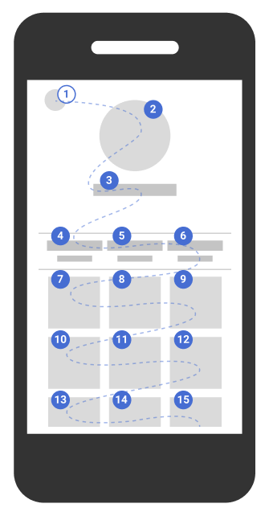

Navigation clavier
S’assurer que l’utilisateur puisse naviguer uniquement à l’aide du clavier
Permettre d’utiliser les principales fonctionnalités de l’application au clavier #
Cible : tout le monde, et en particulier les personnes déficientes visuelles, cognitives, motrices et en mobilité.
Quand : dès la phase de conception et lors du développement.
Description :
Mettre en place des gestionnaires d’événements qui ne s’appuient pas uniquement sur des événements souris, permettent donc d'être pilotable au clavier et ceci sans limite de temps.
À vérifier :
-
Toutes les actions importantes effectuées à la souris peuvent aussi l’être avec le clavier, quitte à proposer une alternative spécifique pour les interactions complexes (drag’n’drop, gestes à plusieurs doigts sur mobile …) tout en évitant d'innombrables frappes.
-
Utiliser au maximum les composants HTML interactifs de base (champs, liens, boutons), ceux-ci étant nativement accessibles au clavier. À défaut, veiller à ce que les composants personnalisés soient opérables au clavier de manière classique.
Voir la façon de naviguer au clavier dans un navigateur web.
Objectif utilisateur :
Permettre aux utilisateurs qui ne peuvent pas utiliser la souris (non ou malvoyants, déficients moteurs, cognitives, web mobile, en mobilité…) d’accéder aux fonctionnalités principales de l’application au clavier.
Exemple valide :
- Un sous-menu qui se déroule au survol doit aussi se dérouler quand l’item de menu parent reçoit le focus clavier.
- Dans un webmail, un clic droit permet d’accéder à un menu pour vider la corbeille, un bouton « vider la corbeille » est également présent dans l’interface quand la corbeille est en cours de consultation.
Exemple non-valide :
Une fonctionnalité réalisable uniquement à l’aide du drag’n’drop et sans équivalent au clavier.
Référence WCAG :
Rendre le parcours du focus séquentiel et logique sans piège clavier #
Cible : tout le monde, et en particulier les personnes déficientes visuelles, cognitives ou avec un trouble de l’attention 1et en mobilité.
Quand : lors du développement.
Description :
Les éléments (liens, boutons, éléments de formulaire) doivent recevoir le focus dans un ordre séquentiel et logique (de haut en bas et de gauche à droite) lorsque l'ordre du focus est nécessaire pour la compréhension ou l'opérabilité clavier et cela même pour du contenu généré dynamiquement (modification du DOM, Ajax,…). Bien-sûr, le focus ne doit ni rester piégé, ni bloqué.
Pour le contenu, également, si un sens de lecture est nécessaire à la bonne compréhension, il faut s'assurer que celui-ci est cohérent pour tout utilisateur.
Exemple, les puces numérotées indiquent l'ordre de déplacement du focus dans cette page :

À vérifier :
- Pour valider cette exigence, la position du focus doit être visible à tout moment (propriété
outlineet:focusen CSS), voir exigence 20, ci-dessous. - Veillez à ce que l’ordre d’apparition des éléments dans le code HTMLsoit le même que l'ordre de déplacement du focus ou de lecture de l'information dans la page si cet ordre impacte la compréhension du contenu ou capacité d'utiliser l'interface. Un élément présent à la fin du code source mais positionné tout en haut de la page via CSS sera le dernier à recevoir le focus. C'est la solution la plus simple !
- Pour la maintenabilité, éviter l’utilisation de l’attribut
tabindexavec des valeurs supérieures à 0. - Même lors d’apparition ou de disparition de contenu, il faut conserver ce parcours logique et séquentiel.
Ceci est vrai pour du contenu dynamiquement généré ou pour des SPA (single page application) ou des applications web sur une seule page. Pour plus de détails, voir Gérer le focus pour du contenu dynamique
Objectif utilisateur :
Permettre la navigation logique, sans piège au clavier dans les pages de l’application. Nécessaire pour les utilisateurs ne naviguant qu’au clavier (non ou malvoyants, déficients moteurs, déficients cognitifs, en mobilité).
Exemple valide :
Dans une page dédiée à la recherche dans le site, on passe, à la navigation clavier, sur le formulaire de recherche avant d'arriver à la liste des résultats.
Exemple non-valide :
Une page contenant un lecteur vidéo dont le focus peut entrer à l’intérieur du lecteur, mais ne peut pas en sortir (piège clavier).
Référence WCAG :
Rendre visible le focus en toute circonstance #
Cible : tout le monde, et en particulier les personnes déficientes visuelles, motrices, cognitives, ayant un déficit d’attention et en mobilité.
Quand : dès la phase de conception et lors du développement.
Description :
Ne pas masquer le focus et si nécessaire accentuer sa visibilité sur tous les éléments focusables, par exemple en modifiant la propriété CSS outline.
Veiller à fournir un niveau de contraste suffisant de 3:1 pour que celui-ci soit visible par tous (cf. mesurer le niveau de contraste des couleurs).
Lorsqu’un effet est visible sur un élément au survol de la souris (:hover en CSS par exemple), cet effet doit être également affiché à la prise du focus (:focus).
Il est possible, avec du code Javascript, de n’afficher l’outline que lors d’une navigation au clavier (c’est à dire de ne pas afficher l’outline lors d’un clic souris, qui active également l’état :focus) :
var head = document.head || document.getElementsByTagName(’head’)[0];
var axsStyles = head.appendChild(document.createElement(’style’));
document.addEventListener(’mousedown’, function() {
axsStyles.innerHTML = ’* {outline:none !important}’;
});
document.addEventListener(’keydown’, function() {
axsStyles.innerHTML = ’’;
});
Démonstration de la visibilité du focus à la navigation clavier uniquement
À vérifier :
Dans beaucoup de frameworks front ou dans les reset CSS, la propriété outline (qui permet de visualiser le focus) est désactivée (outline: none;), penser à la redéfinir et vérifier que le focus est visible sur tous les éléments le recevant.
Par défaut, le focus est visible via la propriété CSS outline: 1px. Ceci n'est pas suffisant pour être bien visible, nous préconisons au moins 2px pour la propriété outline et un contraste de 3:1 par rapport à la couleur de fond.
De plus, il faut vérifier la visibilité du focus sur tous les éléments focusables, notamment, car la couleur de fond de l'élément peut être la même que le focus et donc, masquer celui-ci.
Objectif utilisateur :
Permettre la visibilité du focus sur tous les éléments actifs, notamment pour les utilisateurs de clavier (déficients visuels, moteurs ou ceux ayant des déficiences d’attention et de mémorisation ou en mobilité).
Exemples valides :
Dans les captures d’écran suivantes, le focus est positionné sur le lien « 209 SMS/mois ».
La première capture présente le comportement par défaut (focus représenté par des pointillés).
Dans la seconde capture, les pointillés ont été supprimés, mais un encadré permet d’indiquer de manière explicite l’emplacement du focus.


Référence WCAG :